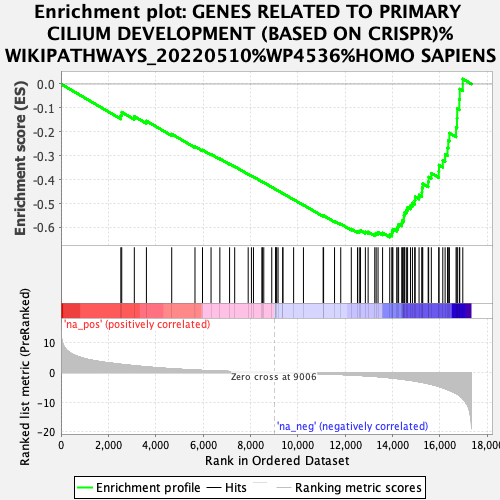

| | | Dataset | ranked_mn_list |
| Phenotype | NoPhenotypeAvailable |
| Upregulated in class | na_neg |
| GeneSet | GENES RELATED TO PRIMARY CILIUM DEVELOPMENT (BASED ON CRISPR)%WIKIPATHWAYS_20220510%WP4536%HOMO SAPIENS |
| Enrichment Score (ES) | -0.6404369 |
| Normalized Enrichment Score (NES) | -2.0629246 |
| Nominal p-value | 0.0 |
| FDR q-value | 3.6270975E-4 |
| FWER p-Value | 0.011 |
Table: GSEA Results Summary

Fig 1: Enrichment plot: GENES RELATED TO PRIMARY CILIUM DEVELOPMENT (BASED ON CRISPR)%WIKIPATHWAYS_20220510%WP4536%HOMO SAPIENS
Profile of the Running ES Score & Positions of GeneSet Members on the Rank Ordered List
| SYMBOL | RANK IN GENE LIST | RANK METRIC SCORE | RUNNING ES | CORE ENRICHMENT | | 1 | KIF3A | 2528 | 2.739 | -0.1309 | No |
| 2 | TEDC2 | 2566 | 2.702 | -0.1177 | No |
| 3 | CEP97 | 3098 | 2.251 | -0.1357 | No |
| 4 | TCTN3 | 3609 | 1.873 | -0.1546 | No |
| 5 | CEP76 | 4678 | 1.244 | -0.2094 | No |
| 6 | BBS2 | 5661 | 0.810 | -0.2617 | No |
| 7 | CEP295 | 5979 | 0.687 | -0.2761 | No |
| 8 | C2CD3 | 6340 | 0.570 | -0.2938 | No |
| 9 | SASS6 | 6712 | 0.458 | -0.3126 | No |
| 10 | TRAPPC11 | 7123 | 0.347 | -0.3344 | No |
| 11 | TMEM216 | 7339 | 0.297 | -0.3452 | No |
| 12 | CEP104 | 7909 | 0.182 | -0.3771 | No |
| 13 | ARL13B | 8046 | 0.157 | -0.3841 | No |
| 14 | SCLT1 | 8132 | 0.142 | -0.3882 | No |
| 15 | TMEM231 | 8489 | 0.078 | -0.4084 | No |
| 16 | IFT80 | 8509 | 0.074 | -0.4091 | No |
| 17 | OFD1 | 8568 | 0.064 | -0.4121 | No |
| 18 | BBS10 | 8905 | 0.013 | -0.4315 | No |
| 19 | TMEM17 | 9070 | -0.005 | -0.4409 | No |
| 20 | INPP5E | 9075 | -0.006 | -0.4411 | No |
| 21 | MIB1 | 9112 | -0.009 | -0.4432 | No |
| 22 | PIBF1 | 9171 | -0.016 | -0.4464 | No |
| 23 | ARMC9 | 9369 | -0.041 | -0.4576 | No |
| 24 | KATNB1 | 9377 | -0.043 | -0.4578 | No |
| 25 | TUBE1 | 9829 | -0.115 | -0.4832 | No |
| 26 | BBS1 | 10244 | -0.202 | -0.5061 | No |
| 27 | EFCAB7 | 11077 | -0.409 | -0.5519 | No |
| 28 | CEP44 | 11095 | -0.415 | -0.5506 | No |
| 29 | IFT172 | 11558 | -0.567 | -0.5741 | No |
| 30 | RABL2B | 11820 | -0.646 | -0.5855 | No |
| 31 | CPLANE1 | 12266 | -0.812 | -0.6067 | No |
| 32 | RPGRIP1L | 12527 | -0.919 | -0.6166 | No |
| 33 | TEDC1 | 12602 | -0.948 | -0.6155 | No |
| 34 | IFT57 | 12656 | -0.976 | -0.6130 | No |
| 35 | TRAF3IP1 | 12861 | -1.079 | -0.6187 | No |
| 36 | CEP19 | 12977 | -1.135 | -0.6189 | No |
| 37 | EVC | 13258 | -1.283 | -0.6279 | No |
| 38 | CC2D2A | 13316 | -1.321 | -0.6237 | No |
| 39 | MKS1 | 13396 | -1.372 | -0.6205 | No |
| 40 | BBS7 | 13588 | -1.504 | -0.6230 | No |
| 41 | CDK20 | 13890 | -1.731 | -0.6306 | Yes |
| 42 | WDR35 | 13984 | -1.811 | -0.6257 | Yes |
| 43 | ARL6 | 13992 | -1.818 | -0.6158 | Yes |
| 44 | DYNLT1 | 14023 | -1.856 | -0.6070 | Yes |
| 45 | DYNC2LI1 | 14185 | -1.996 | -0.6051 | Yes |
| 46 | KIAA0753 | 14235 | -2.034 | -0.5964 | Yes |
| 47 | IFT81 | 14266 | -2.070 | -0.5864 | Yes |
| 48 | KIFAP3 | 14398 | -2.195 | -0.5815 | Yes |
| 49 | IFT52 | 14426 | -2.222 | -0.5705 | Yes |
| 50 | BBS5 | 14488 | -2.294 | -0.5610 | Yes |
| 51 | BBS9 | 14491 | -2.299 | -0.5481 | Yes |
| 52 | ARL3 | 14522 | -2.334 | -0.5366 | Yes |
| 53 | FBF1 | 14592 | -2.417 | -0.5269 | Yes |
| 54 | LZTFL1 | 14644 | -2.473 | -0.5158 | Yes |
| 55 | CLUAP1 | 14768 | -2.594 | -0.5082 | Yes |
| 56 | KIF3B | 14850 | -2.686 | -0.4977 | Yes |
| 57 | DYNC2H1 | 14946 | -2.824 | -0.4872 | Yes |
| 58 | TUBD1 | 14963 | -2.843 | -0.4720 | Yes |
| 59 | IFT74 | 15129 | -3.087 | -0.4640 | Yes |
| 60 | TMEM107 | 15248 | -3.248 | -0.4524 | Yes |
| 61 | TTC26 | 15257 | -3.254 | -0.4344 | Yes |
| 62 | WDPCP | 15285 | -3.304 | -0.4173 | Yes |
| 63 | CPLANE2 | 15514 | -3.712 | -0.4094 | Yes |
| 64 | BBS4 | 15535 | -3.755 | -0.3893 | Yes |
| 65 | TTC8 | 15648 | -3.963 | -0.3733 | Yes |
| 66 | TTC23 | 15962 | -4.661 | -0.3650 | Yes |
| 67 | IFT20 | 15972 | -4.677 | -0.3390 | Yes |
| 68 | CEP162 | 16132 | -5.122 | -0.3192 | Yes |
| 69 | IFT27 | 16230 | -5.403 | -0.2941 | Yes |
| 70 | HSPB11 | 16332 | -5.723 | -0.2675 | Yes |
| 71 | BBS12 | 16364 | -5.806 | -0.2364 | Yes |
| 72 | EVC2 | 16411 | -5.963 | -0.2053 | Yes |
| 73 | TCTN2 | 16693 | -7.009 | -0.1818 | Yes |
| 74 | TMEM67 | 16733 | -7.144 | -0.1435 | Yes |
| 75 | IFT140 | 16741 | -7.187 | -0.1032 | Yes |
| 76 | RAB23 | 16831 | -7.724 | -0.0646 | Yes |
| 77 | TTC30B | 16848 | -7.823 | -0.0211 | Yes |
| 78 | TCTN1 | 16977 | -8.781 | 0.0213 | Yes |
Table: GSEA details [plain text format]
Fig 2: GENES RELATED TO PRIMARY CILIUM DEVELOPMENT (BASED ON CRISPR)%WIKIPATHWAYS_20220510%WP4536%HOMO SAPIENS: Random ES distribution
Gene set null distribution of ES for GENES RELATED TO PRIMARY CILIUM DEVELOPMENT (BASED ON CRISPR)%WIKIPATHWAYS_20220510%WP4536%HOMO SAPIENS